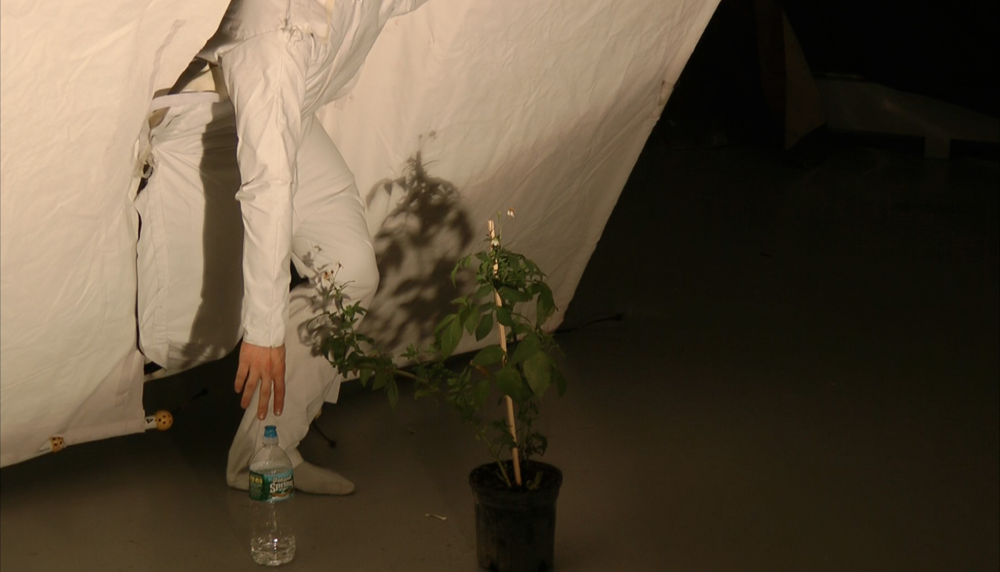
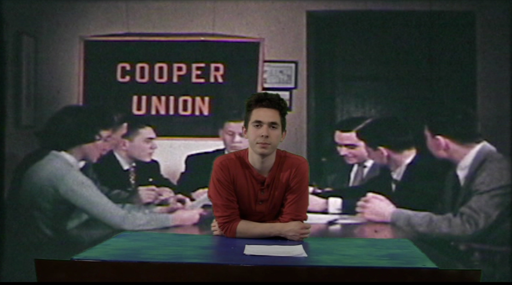

Lost In Translation

In Lost In Translation, I wanted to collapse the space between the viewer of
a projection and the projection. Though the absurdest gesture of becoming the screen, I wanted
to draw attention to the effects that viewing media has on the viewer.
I built and sewed the screen, which is supported by a frame constructed out of PVC piping.
State of the Union

State of the Union is a collaborative video work that was thought up by myself,
Angus Buchanan-Smith, and Tyler Paige in response to the tuition crisis at the Cooper Union.
The video is set against the back drop of a promotional film made by The Cooper Union, that advertises
the Cooper Union in the 1960’S. During a time when the institution was financially stable and owned large assets,
that have since been sold off. The contrast between the current State of the Cooper Union from the Cooper Union in the
video, is highlighted through the use of language and action which differs from those in the original film.
This discrepancy calls attention to the problems Cooper is facing in the present.
Members of the Cooper Community have lost faith in their ability to trust the schools administration
to provide them with factual information about changing policies, and have lost faith in the administration’s
desire to stay true to the mission of the institution. To confront the institution’s current desire to manipulate
the history of the school, we recorded over the history of the institution as the administration is attempting to do.
Working with a present that is so confusing, we also wanted the viewer to question the accuracy and intentions of the
archival footage.